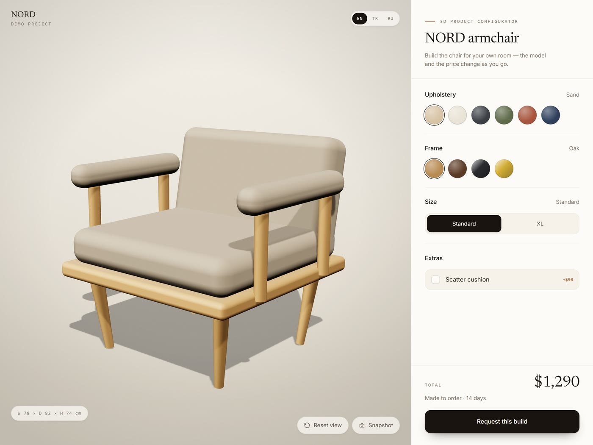

01 — Product configurator
Armchair configurator
A real-time 3D configurator: six fabrics, four frame finishes, two sizes, with the price and lead time recalculating as the customer builds the product. Runs in the browser, no plugin, works on a phone.
- Three.js
- WebGL
- PBR materials
- Vanilla JS